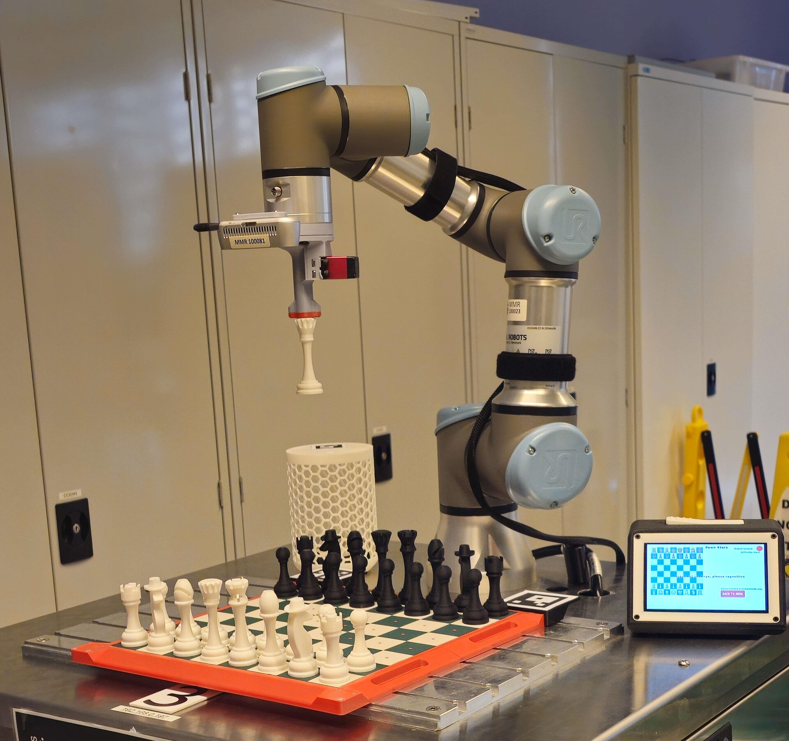
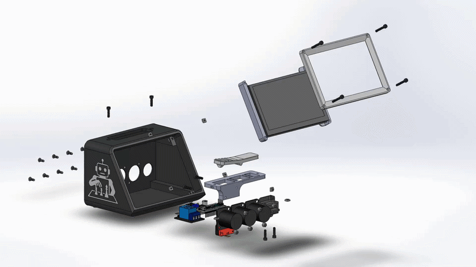
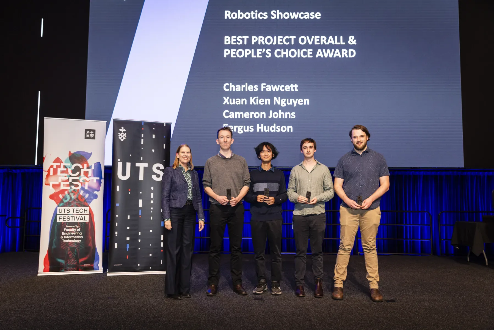

Overview
A group of four students built a complete chess-playing cobot for Robotics Studio 2. The UR3e arm picks and places pieces based on moves from an integrated chess AI, with a custom end effector, purpose-built chess board, and a touchscreen chess clock as the main human interface. A full Gazebo simulation was developed alongside the physical system.
I was responsible for the chess board, end effector, and chess clock housing and dead man's switch, and contributed to the computer vision, path planning, and state machine architecture.

UR3e picking up a chess piece during play
Chess board and end effector
The chess board and pieces were designed around robustness and high misalignment tolerance. Magnets embedded in the board, piece bases, and end effector tip allow the robot to acquire pieces reliably even with imprecise localisation or camera calibration error. Magnets in the board also snap human-placed pieces back into alignment, ensuring the robot can accurately acquire them on its next move.

Player making a move at the project handover
Chess clock and interface
The chess clock is the central human interface and electronics hub. It houses a Raspberry Pi running a touchscreen UI in ROS2, a chess clock-style dead man's switch for safe operation, and panel mount connectors for all mechatronics components. The Raspberry Pi acts as the ROS2 passthrough for the end effector, dead man's switch, and Intel RealSense camera. The UI lets players select AI difficulty, use our custom AI, restart games, queue moves, and view a live board state.


Touchscreen chess clock and CAD exploded view of the housing
Software contributions
Although my assigned role was hardware-focused, all mechanical tasks were completed well ahead of schedule to maximise programming time for the team. This gave me the opportunity to contribute heavily to troubleshooting across the path planning, computer vision, AI integration, and GUI elements of the project. The vision pipeline used Python to process ArUco tags via the Intel RealSense for board state detection and piece localisation, while MoveIt handled trajectory generation and collision detection for all robot moves.

UTS Tech Fest 2025 — Best Project Overall and People's Choice Award


Project handover showcase
Key skills
- Custom end effector design for reliable magnetic pick-and-place
- Tolerance-aware mechanical design to handle localisation and calibration uncertainty
- ROS2 system integration across multiple hardware components
- Embedded UI development on Raspberry Pi with ROS2
- Computer vision using Python and ArUco tags with Intel RealSense
- Motion planning and collision detection with MoveIt
- Multidisciplinary group collaboration under a fixed semester deadline
← Back to projects